Underactuated Robots
 Torque-limited manipulators
Torque-limited manipulators
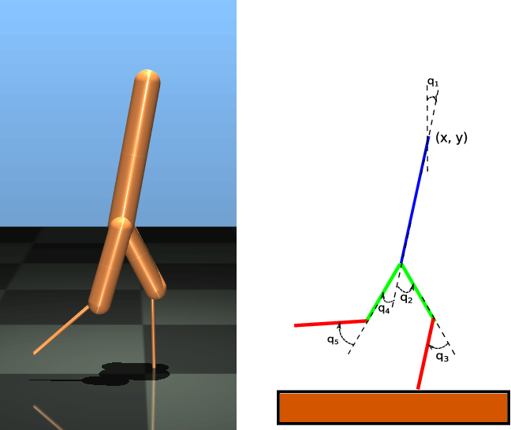 Walking robots
Data-Driven Passivity-Based Control
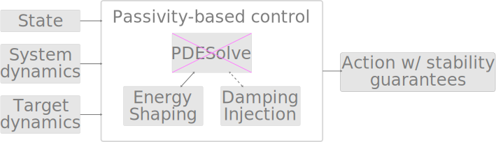

- Systematic approach
- Prior domain knowledge
- Stability is intrinsic
- Model uncertainty considerations via Bayesian learning
High-dimensional Problem: Ballbot

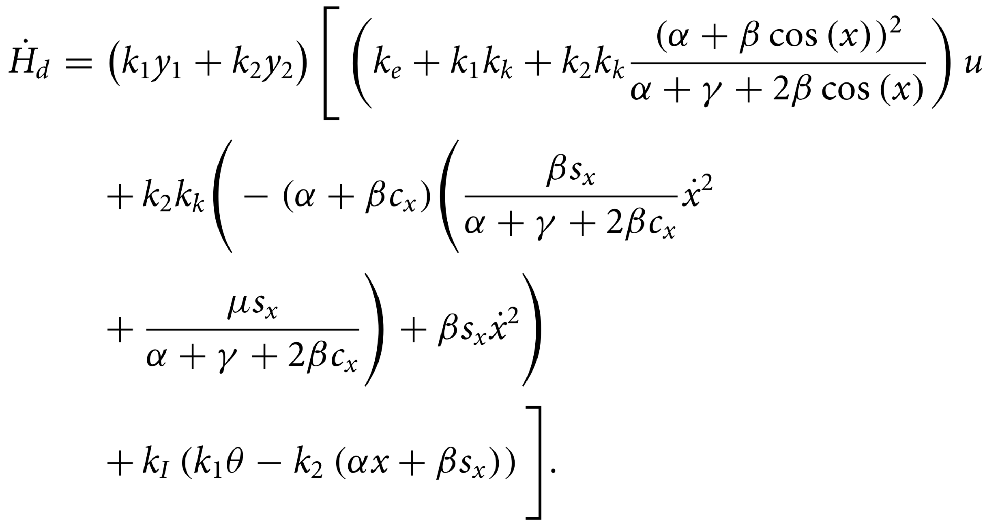
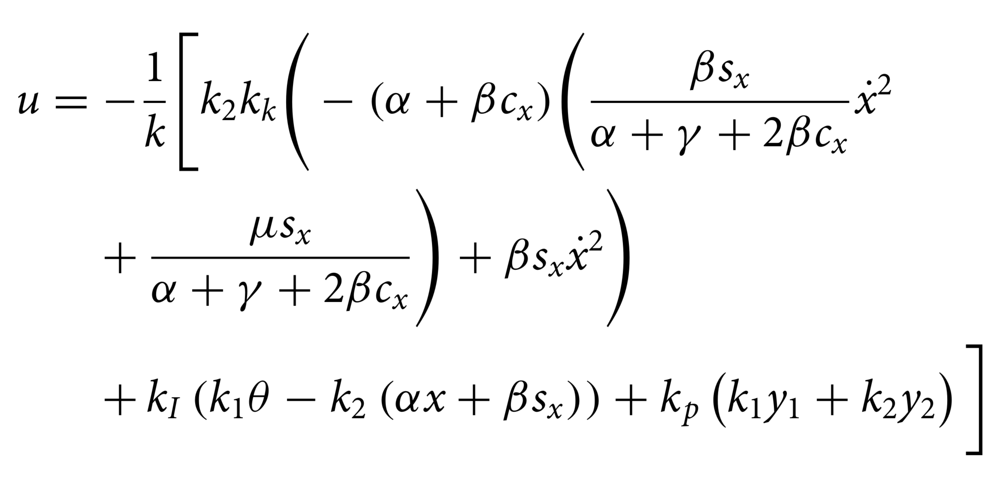
Our Methods
NeuralPbc Sampling State Space 📉


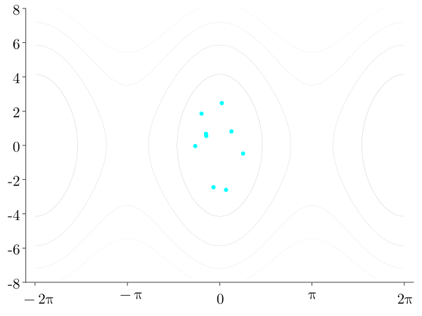
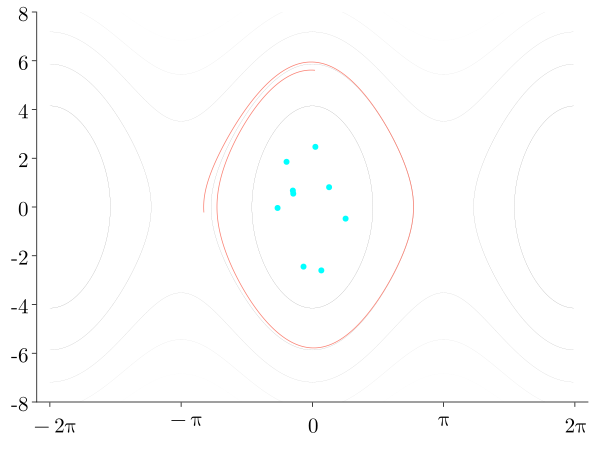


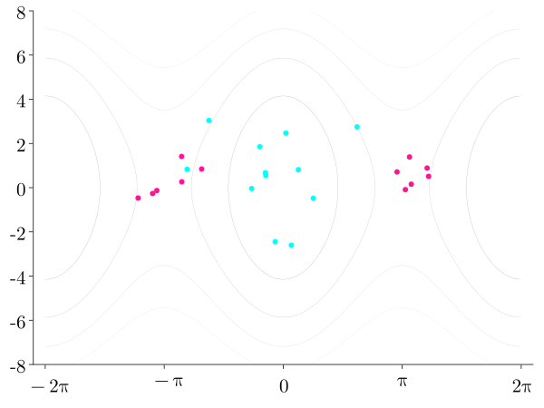


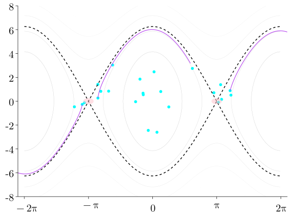
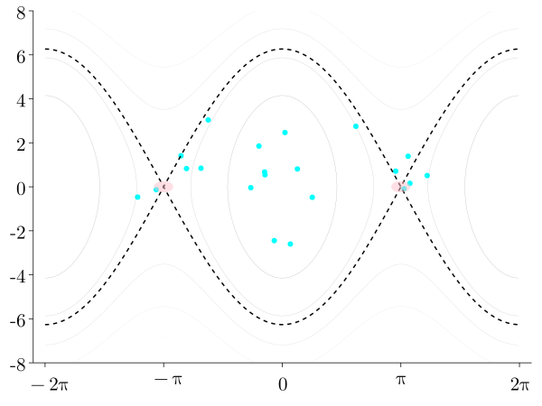


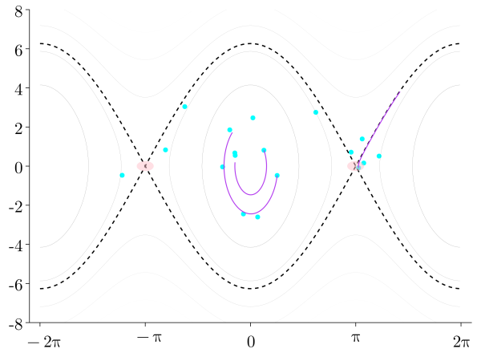
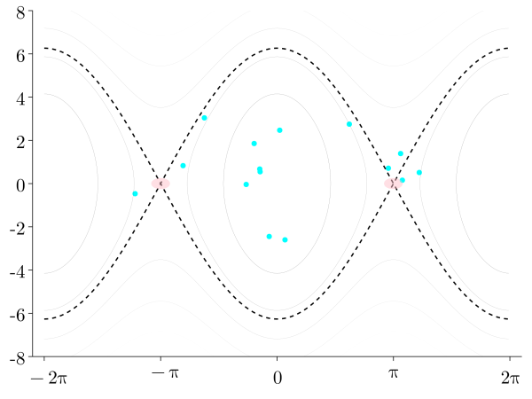
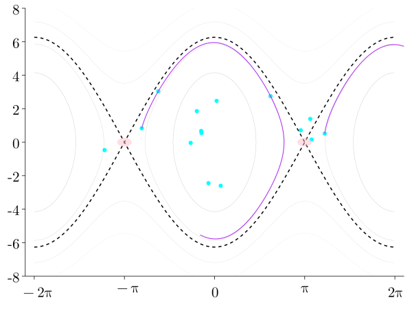


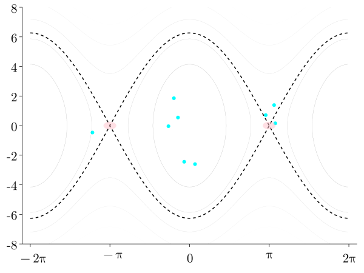
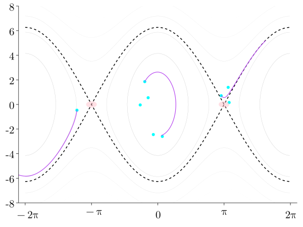

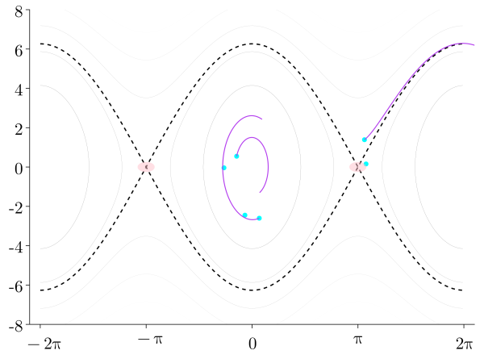
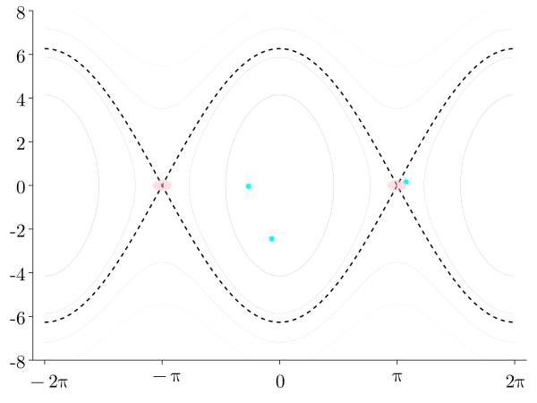


Case Study: Inertia Wheel Pendulum

The control input is torque applied to the wheel. The equations of motion are
| Deterministic | Bayesian | |
|---|---|---|
| neural net size | (6, 12, 3, 1) | (6, 5, 3, 1) |
| Learned parameters | 133 | 128 |
| Optimizer | ADAM | DecayedAdaGrad |
| Initial learning rate | 0.001 | 0.01 |
| Replay buffer size | 400 | 50 |
Deterministic vs Bayesian in Experiment
System parameters used in real-world experiments. The errors in the last column are .
| Parameter set | |||
|---|---|---|---|
| Nominal | 0.0455 | 0.00425 | 1.795 |
| A | 0.0417 | 0.00330 | 1.577 |
| B | 0.0378 | 0.00235 | 1.358 |
| C | 0.0340 | 0.00141 | 1.140 |
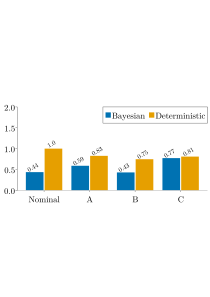